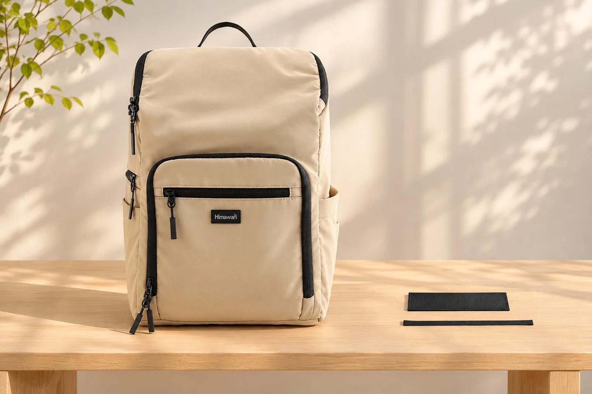
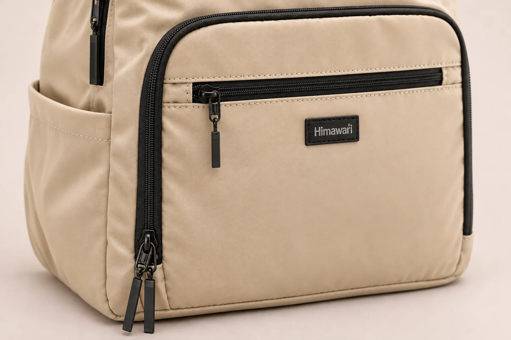
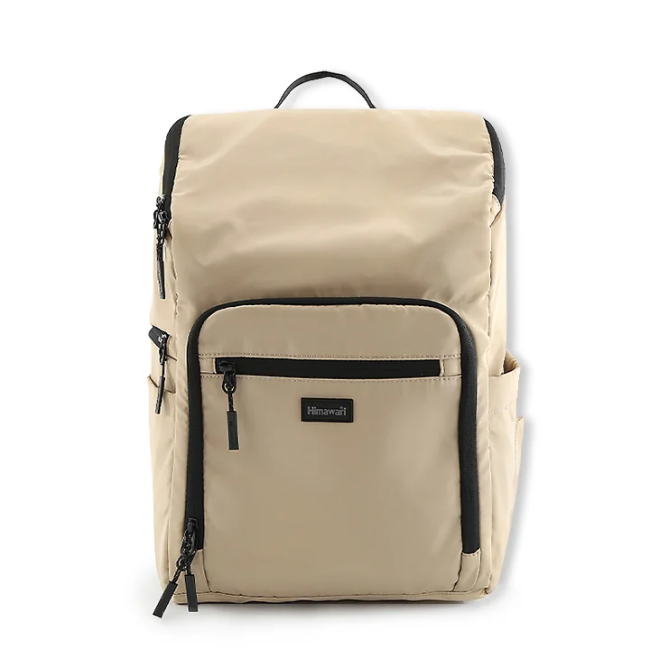

백팩 지퍼 손잡이를 길게 달기 전에 잡는 면부터 볼까

백팩 지퍼를 몇 번 놓치다 보면 손잡이를 길게 바꿔 달고 싶어집니다. 장갑을 낀 날에는 짧고 얇은 끝을 집는 데 한 번 더 손이 갑니다. 하지만 손이 들어갈 자리가 좁은 포켓과 손잡이까지 닿는 거리가 아쉬운 포켓은 손이 헤매는 이유가 다릅니다. 히마와리 No.1223 베이지에는 검정 지퍼가 앞면에 두 가지 높이로 보입니다. 앞포켓 위쪽의 짧은 가로 지퍼와 큰 앞포켓을 둘러가는 지퍼입니다. 각 손잡이가 평소 어디에 머무르는지 보면 폭을 넓게 잡을 때와 길이를 더할 때의 차이를 생각할 수 있습니다.
손끝이 닿는데 놓친다면 잡는 면을 봅니다
가방을 세우고 위쪽 가로 지퍼의 작은 손잡이에 손을 대 봅니다. 가는 탭은 손끝에서 돌아갈 수 있습니다. 탭이 몸판에 붙으면 집을 면도 좁아집니다. 손이 끝에 닿은 순간과 실제로 집는 순간을 나눠 보세요. 폭이 넓고 납작한 끝은 손가락을 어디에 댈지 눈으로 알아보기 쉽습니다. 손끝에 장갑을 낀 상태에서 직접 잡아보면 몸판과 탭 사이로 얼마나 손가락을 넣어야 하는지도 느낄 수 있습니다. 끝까지 닿는데 자꾸 놓쳤다면 더 멀리 늘어뜨리기 전에 어느 면을 잡고 있는지부터 확인합니다.
손잡이가 몸판에 납작하게 붙어 있다면 가방을 내려놓았을 때 탭이 어느 쪽으로 기우는지 한 번 봅니다. 탭을 잡으면 움직이나요? 닫고 놓으면 다시 몸판에 붙을 수 있습니다. 지퍼 덮개나 옆판에 탭이 가려지는 경우에는 손이 들어갈 자리도 확인합니다. 가방을 세웠을 때와 눕혔을 때 위치가 바뀌기도 합니다. 손을 지퍼가 끝나는 쪽에서 넣자마자 잘 잡히면 그 동작을 먼저 써 봅니다. 손이 같은 자리에서 계속 미끄러질 때만 잡는 끝의 폭과 두께를 살펴봅니다.

손끝이 닿기 어려울 때는 길이와 남는 자리를 같이
긴 탭은 지퍼 머리보다 낮은 자리에서 집을 수 있습니다. No.1223 베이지의 사진에서 상단 가로 지퍼 손잡이가 놓인 자리와 큰 포켓 둘레 지퍼 손잡이가 내려와 있는 왼쪽 아래 자리를 비교해 보세요. 위쪽에서 조금 늘어나는 끈은 같은 길이라도 아래쪽에 달았을 때와 전혀 다른 곳에 닿을 수 있습니다. 위에 단 탭은 아래 포켓 입구를 가로지를 수 있습니다. 바닥 가까이에 달면 선반이나 의자 옆으로 뻗을 수도 있습니다. 쓰는 지퍼를 닫은 상태에서도 바닥 쪽으로 남는 부분이 있는지 보면 두 위치의 차이가 분명해집니다.
가방을 빈 채로 한 번 들어 무릎 높이에서 살짝 옮겼을 때와 책상에 놓았을 때 손잡이 끝이 향하는 곳을 봅니다. 끝을 늘리겠다면 제품에 연결하기 전에 종이띠를 옆에서 대 보고 어디까지 내려올지 먼저 가늠할 수 있습니다. 종이띠를 옆에 댑니다. 아래 포켓에 닿는지 봅니다. 지퍼를 잡는 손이 다른 포켓과 겹치는지도 가늠할 수 있습니다. 실제로 흔들리는 범위나 연결부가 어떤 힘을 받는지는 별도 문제입니다. 실제 교체를 고민한다면 제조사나 판매처가 안내한 연결 방식과 원래 지퍼 머리의 형태부터 확인해 둡니다.
두 포켓을 나누어 판단합니다
윗주머니에서 작은 물건을 자주 꺼내고 아래쪽 포켓은 하루에 한 번만 연다면 두 손잡이를 같은 모양으로 맞출 이유가 줄어듭니다. 윗주머니에는 손이 잘 닿아도 탭을 잡기 어려울 수 있습니다. 큰 포켓은 낮은 자세에서 열 때 기존 길이로도 손에 잡힐 수 있습니다. 걸터앉은 상태에서 큰 포켓 아래쪽에 손이 잘 닿지 않는다면 가방 바닥을 받치고 몸 쪽으로 돌려 놓는 것만으로 손이 닿을 수 있습니다. 손끝에서 놓치는 포켓을 고릅니다. 앉은 자리에서 손이 닿기 어려운 포켓도 확인합니다. 두 손잡이를 똑같이 고를지 여기서 정할 수 있습니다.

앞면에 비슷한 색의 긴 끈 두 개가 나란히 놓이면 손을 뻗었을 때 두 포켓의 손잡이를 한꺼번에 잡을 수 있습니다. 제품 사진에서 각 지퍼가 이어진 선을 먼저 확인하고 가방을 들었을 때 서로 겹치지 않는 위치를 살펴봅니다. 좁은 지퍼 머리에 굵은 부품을 억지로 통과시키거나 탭을 떼어낼 필요는 없습니다. 움직일 길이 있는지 보려다 지퍼가 당겨진 채로 멈추면 원래 부품 상태를 확인하기도 어려워집니다. 바꾸기 전에 앞면을 찍어 둡니다. 구입한 색상과 원래 손잡이를 사진에서 확인할 수 있습니다. 손잡이를 더 쉽게 잡는 방법이 있는지 물을 때에도 쓸 수 있습니다.
별도 연장 탭을 비교할 때는 이름에 적힌 길이만 빠르게 읽기보다 손에 쥘 수 있는 부분이 어디부터인지 봅니다. 탭 끝이 길더라도 고리와 연결하는 데 쓰이는 부분까지 합쳐 잰 길이라면 막상 집을 수 있는 면은 생각보다 짧을 수 있습니다. 폭도 지퍼 바로 아래의 가장 좁은 곳과 손이 잡는 넓은 곳이 다를 수 있습니다. 현재 가방의 탭을 뜯지 않고도 손이 놓이는 위치를 먼저 찾아두면 두 수치 가운데 무엇을 볼지 정할 수 있습니다.
먼저 손이 닿는 곳 한 군데를 고릅니다
장갑을 벗고 나면 문제없이 쓰는 손잡이라면 장갑을 낀 날에만 어느 지퍼를 열기 쉬운지 비교해 보세요. 끝이 손가락 사이에서 돌아간다면 닿는 폭을 봅니다. 손이 아예 닿기 어렵다면 길이와 남는 자리를 확인합니다. 두 가지를 한꺼번에 바꾸면 어떤 이유로 쓰기 나아졌는지 확인하기가 어렵습니다. 자주 여는 포켓부터 평소와 같은 자세로 열어 보세요. 지퍼를 건드리지 않고 기존 손잡이에 손을 대는 동작만으로도 손가락을 넣을 틈과 손목이 꺾이는 방향을 살필 수 있습니다. 가방을 내려놓고 연다면 탭이 원단에 닿는 자리를 먼저 봅니다. 몸 옆에서 자주 연다면 가방이 몸 쪽으로 언제 돌아오는지 확인합니다. 잡았을 때의 손 위치와 놓은 뒤의 남는 길이를 함께 봐야 손잡이를 고르기 쉽습니다.